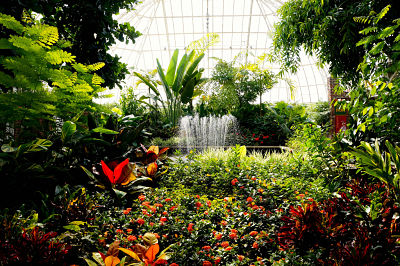
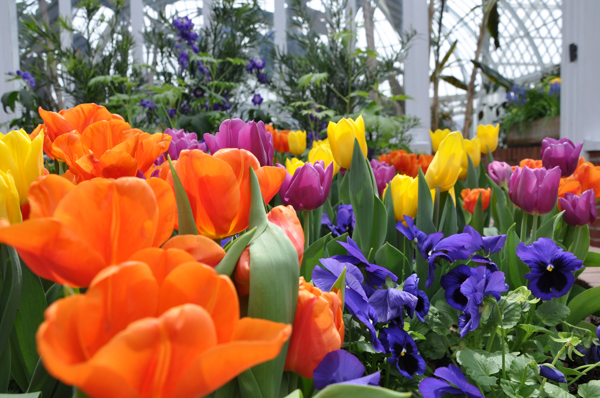

Current Exhibits
Tropical Forest Congo: Feb. - April 2015Phipps Conservatory and Botanical Gardens' Tropical Forest Congo exhibit is the result of years of research on the biodiversity of Africa, where Curator of Horticulture Ben Dunigan and Exhibit Coordinator Jordyn Melino acquired knowledge and inspiration by visiting Cameroon’s most breathtaking natural areas and learning from its indigineous peoples. Open daily, the installation is now part of the guest experience.
For the displays, more than 60 percent of the plant life in the Tropical Forest Conservatory was changed out to feature many varieties of botancial specimens never before showcased at Phipps. Among the specimens are sausage trees (Kigelia africana) — known for their fragrant red flowers that, when pollinated, form large tubular fruits that can weigh up to 22 pounds — and the Napolean hat plant (Napoleonaea imperialis), which bears passionflower-like blooms on its trunk.Tropical Forest Congo also incorporates education stations, including a regional food market, a forest dwelling and field research kiosks. Additionally, Special Events Hall is graced by a façade designed to resemble a palace in which southwestern Cameroon Bamileke tribe would reside, complete with ornately decorated wooden columns. Beaded artifacts, such as ceremonial elephant masks, and stones carved by local artist Richard Hower are on view, too.
Exhibit: Spring Flower Show: MARCH 14 - APRIL 12
Celebrate the season of renewal and regrowth. After another cold winter, our annual Spring Flower Show is the perfect reward for the senses, and, drawing inspiration from the old adage “April showers bring May flowers,” this year’s exhibit will not disappoint as it celebrates rain and its important role in nature with a bevy of bright blooms.
For the show, each display room features a unique design that will delight and enchant guests of every age with an abundance of color, scents, sights and sounds — from cute rain boots planted with bulbs to motion-activated storm clouds that send drops of rain into ponds below as you walk by. There will be plenty of special botanical surprises, too, including breathtaking Himalayan poppies and ‘Hip Hop Bunny’ violas, along with tulips, hyacinths, daffodils, lilies, primula, snapdragons, foxglove and orchids.
Spring Flower Show, designed by Phipps Exhibit Coordinator Jordyn Melino, runs through April 12. Hours are 9:30 a.m. – 5 p.m. daily and until 10 p.m. on Fridays. Admission is $15 for adults, $14 for seniors and students, and $11 for children (2 – 18). Members and kids under 2 enter free.